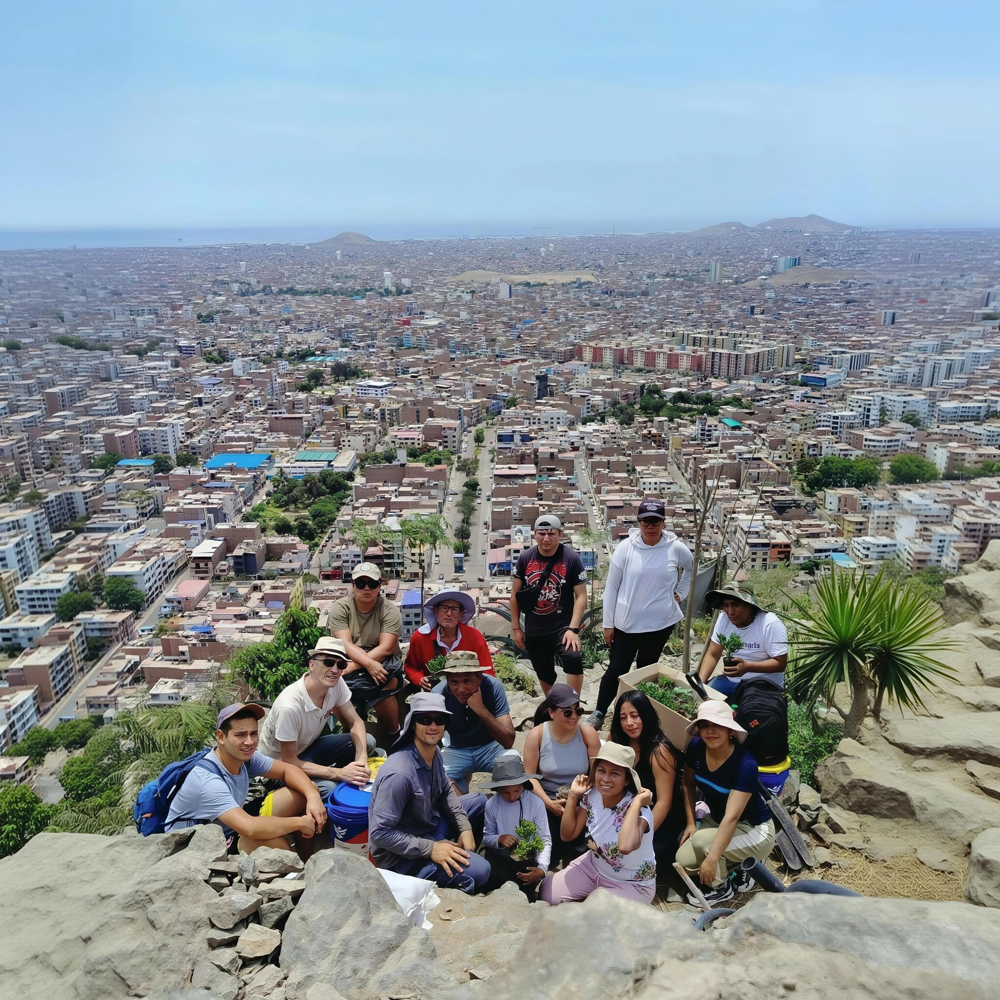
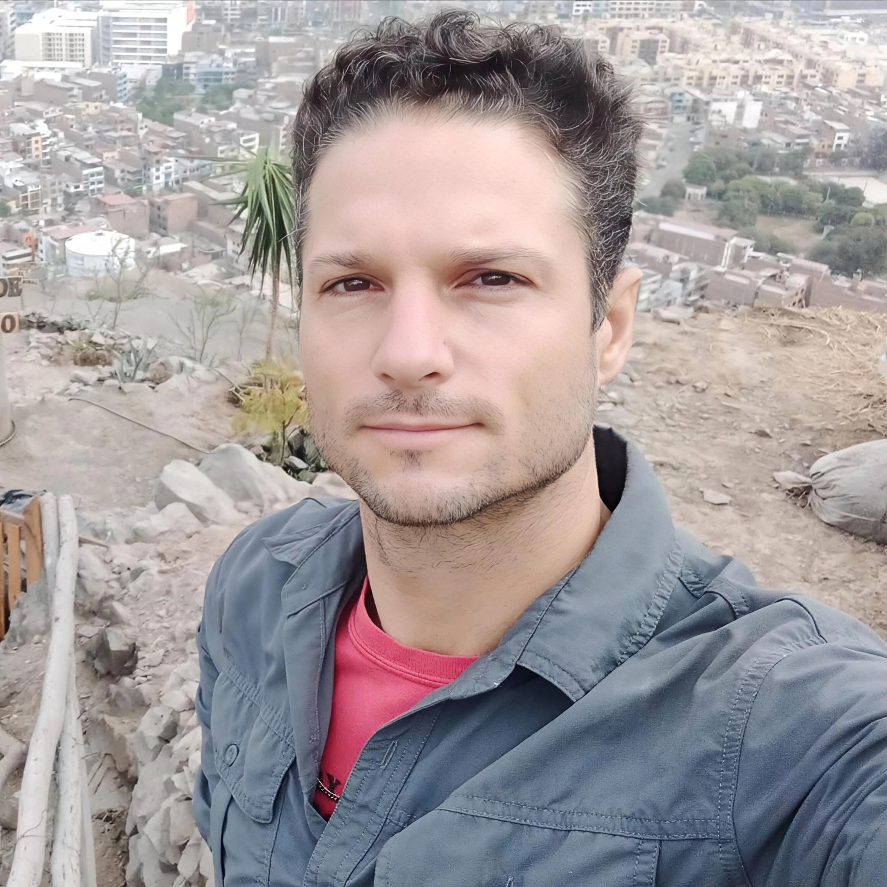

RS · @pasionbotanicaperú
Sembrar en piedra: El reto ambiental de Emiliano
Entrevista audiovisual sobre el desafío de recuperar un territorio rocoso y degradado mediante restauración y trabajo comunitario.
Ver en YouTube →Legado Botánico en los medios
Reportajes, entrevistas y publicaciones que cuentan el trabajo de restauración ecológica, biodiversidad y participación comunitaria de Legado Botánico.
Conversaciones y reportajes audiovisuales relacionados con el proyecto y sus protagonistas.
Entrevista audiovisual sobre el desafío de recuperar un territorio rocoso y degradado mediante restauración y trabajo comunitario.
Ver en YouTube →
El Comercio · Reportaje digitalReportaje sobre la recuperación del cerro y la inspiración en el manejo tradicional del territorio.
Leer nota y reportaje →
Infomercado TVHistoria y recorrido del proyecto de transformación ambiental desarrollado en Cerro La Milla.
Ver artículo →Publicaciones de prensa escrita que han recogido la historia y evolución del proyecto.
Reportaje sobre el proyecto ecológico de Cerro La Milla y la visión de convertir un espacio árido en un área verde.
Leer reportaje →Una mirada al proyecto forestal y al proceso de recuperación del territorio en San Martín de Porres.
Leer nota →Notas, historias y contenidos publicados en medios digitales y portales especializados.
Perfil y contexto del impulsor del proyecto de Cerro La Milla y de la iniciativa de restauración.
Leer nota digital →Historia del cambio de actividad y del desarrollo del proyecto forestal en Cerro La Milla.
Leer nota →Espacios de conversación sobre restauración ecológica, educación ambiental y trabajo comunitario.
Espacio dedicado a conversar sobre restauración ecológica y biodiversidad desde la experiencia de ALEBO.
Escuchar / ver contenido →Conversación sobre educación ambiental, aprovechamiento de materia orgánica y participación comunitaria.
Escuchar / ver contenido →Esta sección se actualizará progresivamente con nuevos reportajes, entrevistas, publicaciones y contenidos audiovisuales sobre Legado Botánico.
Contactar con Legado Botánico →